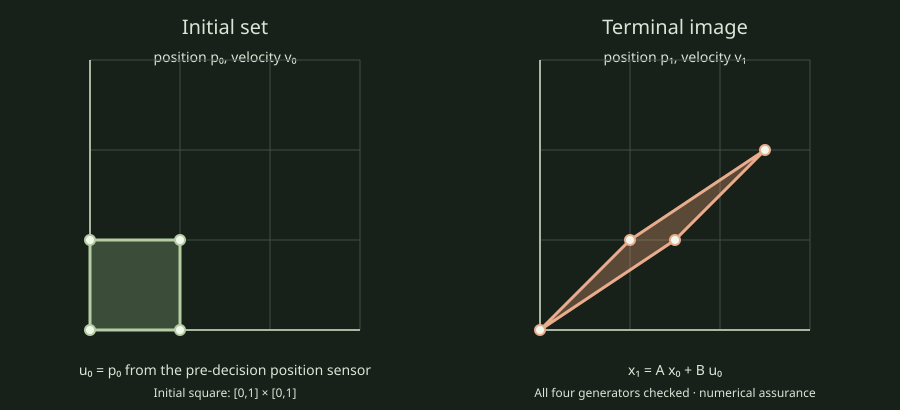

This report measures the public continuous evaluator on one fixed, analytic, one-step fixture. The joint set has four supplied initial-state generators. The policy reads the first observation component and applies it as the scalar action. The action constraint is u ≤ 1.25. Every call returned numerical evidence with feasibility within_tolerance; literal state, action, and margin checks passed for all four generators.

One excluded warmup followed by seven 5,000-call batches. Median: 30.534 ms per batch (6106.8 ns/call); range 29.841–31.362 ms. The measured interval includes public evaluator calls and literal checks; it excludes fixture setup, process startup, JSONL serialization, and rendering.
| Round | Batch ms | ns/call | Outcome |
|---|---|---|---|
| 1 | 31.362 | 6272.4 | passed |
| 2 | 30.840 | 6168.1 | passed |
| 3 | 30.244 | 6048.8 | passed |
| 4 | 29.841 | 5968.3 | passed |
| 5 | 30.534 | 6106.8 | passed |
| 6 | 30.540 | 6107.9 | passed |
| 7 | 30.512 | 6102.4 | passed |
Linux x86_64, AMD Ryzen 5 3550H, GCC 16.2.1, CMake 3.31.6, Release, C++20. The process ran alone; host load and frequency were not controlled, and no separate limiter profile was collected.
This is descriptive single-adapter evidence for one small fixture. It establishes no speedup, scalability, application-load performance, validated rounding enclosure, policy synthesis, or universal initial-state and disturbance guarantee. All-joint mode checks the supplied generators under numerical binary64 arithmetic.
Source commit 27d4ad2e12958609bca976786b7568adc6fe74fa. Report ID ext04-continuous-27d4ad2e12958609. The report bundle contains raw JSONL rows, saved records, summary CSV, the visual, and the Release build log. Saved records · Raw rows · CSV · Offline bundle.